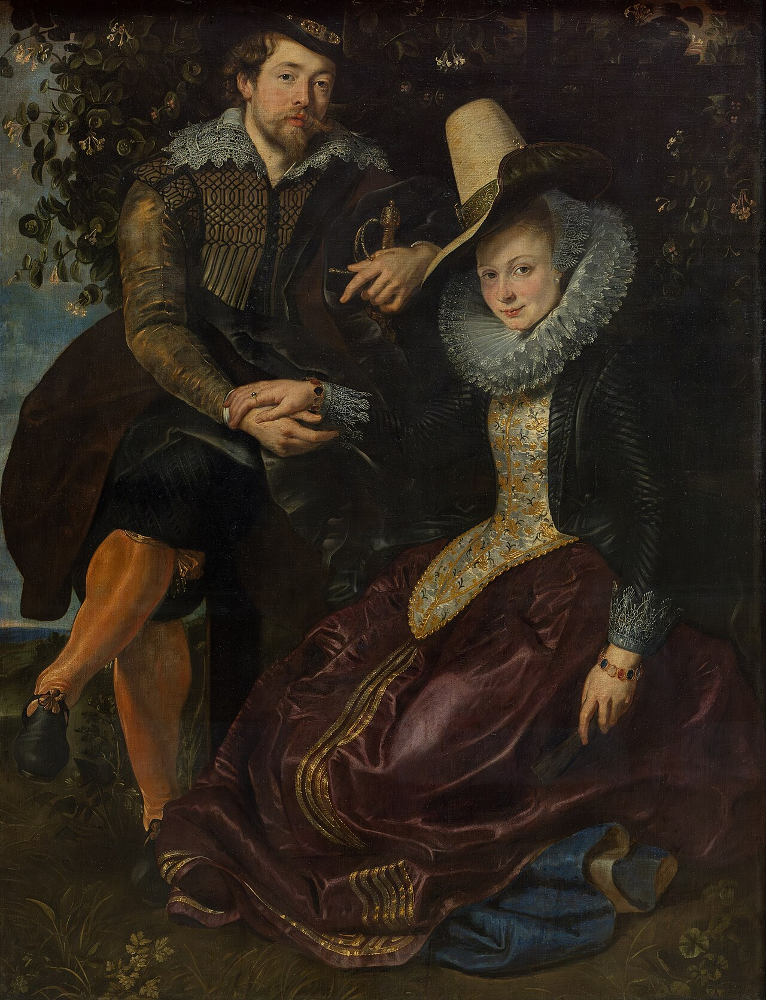
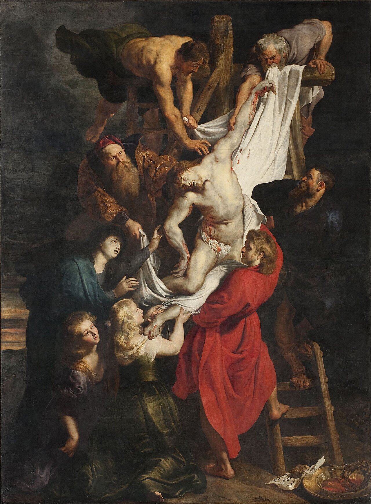

Antwerp, about 1612 · after Peter Paul Rubens

What is real. Peter Paul Rubens came home from Italy late in 1608, was made court painter to the Archdukes Albert and Isabella in September 1609 and married Isabella Brant on 3 October 1609. The Honeysuckle Bower, which shows the two of them, was painted about 1609 and hangs in Munich. The Raising of the Cross (1610–11) was made for the high altar of St Walburga's, the Burcht church by the river: he painted it inside the church, behind a ship's sail, and it stood at the top of nineteen steps. The Arquebusiers ordered The Descent from the Cross on 7 September 1611 for their altar in the cathedral's transept; its middle panel was set up on 12 September 1612 and the wings followed two years later, which is why you saw it without them. The cathedral's north tower (123 metres) was finished about 1520 and the south one was given up in 1475; the bulb over the crossing dates from 1535. The town hall is of 1561–65, burnt in 1576 and rebuilt from 1579. Het Steen was rebuilt about 1520 and was a prison. From 1609 to 1621 there was a truce in the long war, though the Scheldt stayed closed to ships from the sea.
How the picture was made, which is what you did at the end. A great altarpiece was not one man's work from first to last. Rubens ran a workshop, and he made the sketches and designs for everything that came out of it. For the Raising of the Cross he first painted a small oil sketch of the whole picture, to show to the people who had ordered it and for his assistants to follow; the assistants marked the composition out on the great panels; he drew the figures from live models in chalk; and then it was painted. Of the pictures of his workshop it is said that some are all his, and in others his own hand is mainly in the faces and the hands. So the order you had to find is the real one: the small sketch, the assistants, the master. His own oil sketch for this picture is in the Louvre.
What you still cycle past, and what has changed. The line of the errand is today's: the Wapper, the Meir, the Meirbrug, the Schoenmarkt, the Groenplaats, the Handschoenmarkt, the Maalderijstraat, the Grote Markt, the Suikerrui. But the Wapper was the bank of a narrow canal, the Herentalse Vaart, and its street was the Vaartstraat. The Meir, then written Meere, had water down part of its middle and a great crucifix. The Schoenmarkt was probably the Kerckhofstrate, because the Groenplaats was the cathedral's churchyard, the Groen Kerkhof, with a row of houses along its south side. The Suikerrui was open water until 1661. The Meirbrug was already only a name. St Walburga's was pulled down in 1817; its picture has hung in the cathedral since 1816, across the transept from the Descent. And between 1877 and 1885 the river bank by Het Steen was cut back to a straight line: about 700 houses went, the old Burcht with them, and Het Steen, which had stood jammed among houses behind a wharf, was left alone on a new quay.
What is conjecture. In 1612 Rubens did not yet live on the Wapper: he had bought the old brick house and its ground in 1610 or early 1611, was rebuilding it, and lived and worked at his father-in-law's in the Kloosterstraat until some time between 1615 and 1617. So the house here is a building site, and how far the work had got that year is not known. Where the bower stood is not known either, and the picture is older than the purchase. The ordinary houses stand on today's footprints in the manner of the time; none is a portrait. Which stretches of the canals lay open, where the churchyard's trees stood, and where exactly the Arquebusiers' altar stood in the transept are guesses. The guild houses on the Grote Markt are shown as you know them, but most of that north side was rebuilt between about 1875 and 1925 and was plainer before. St Walburga's is set where one description puts it, at the foot of the Zakstraat just north of Het Steen, on today's river bank; its true outline and bearing were not found, and its inside follows a painting of about 1661 by Anton Gheringh. The cathedral's inside is squared up: the high nave, the double aisles and the wide outer aisles with the chapels of Our Lady and of the Sacrament at their east ends are as described, but their heights are by eye, the altars against the pillars follow a painting by Pieter Neefs without their pictures, the glass is left clear because the image-breakers of 1566 smashed the old windows, and the nave vault was in fact being rebuilt in 1610–14. By Het Steen the level puts back the Werf, the wharf that stuck out into the river, with its crane and ships, a fish market where the Steenplein is, and houses crowding the castle and the church: all of these were there, but where each house and stall stood is not known, and the streets of the old Burcht are not rebuilt. The two faces in the first picture are cut from Rubens' own painting.
What is the game's own. That the Raising was finished on this day: it was painted in 1610 and 1611, the year before, and the sail, the easel, the two assistants and what each of them says are imagined; nothing read says how much of this picture the assistants painted. The chalk lines you saw on the panel are drawn by the game from the finished painting. The girl, her errand and the box of colours; every word spoken, the master's included; the cry from the windows (“Pas op! Water!” is plain Dutch, not a recorded cry); the handcarts' loads; and the notion that all this happened on one day. The coins are patagons, the silver coin the Archdukes brought in that very year, 1612; that they lay about the streets is, alas, the game's. Of the street's mishaps, carts, horses, barrowmen, the markets and the fish market are in the sources; the woman who empties her pail from an upper door and her cries (no such cry was found recorded), the boys sweeping horse muck, the runaway pig, the geese, the fishwife's spilt basket, the man reeling out of the tavern and the dogs are the game's, put there because a street of 1612 was not a clean one.
Paintings: public domain, via Wikimedia Commons; the photograph of The Honeysuckle Bower is by GoldenArtists (CC BY 4.0). Every texture in this level was painted by a script for it; nothing is photographed. Street plan © OpenStreetMap contributors. Sources for every statement, and what could not be checked: research/FINDINGS.md.